Crypto Ghosts NFT Crypto Ghosts NFT 统计 创建于大约 1 年前 9,844 代币供应 2.5% 费用 过去 7 天内没有出售 Crypto Ghosts NFT。 Crypto Ghosts 是那些在加密中获得 REKT 的人的第一个系列。10,000 个幽灵是随机生
CryptoCraft Genesis CryptoCraft Genesis 统计数据 创建于 6 个月前 3,936 代币供应 5% 费用 5,621 名 Discord 成员 CryptoCraft Genesis NFT 在过去 7 天内售出 32 次。CryptoCraft Genesis 的总销售额为 336.91 美元。一份 CryptoCraft Genesis NFT 的平均
CryptoCrawlerz 规格 ERC-1155 CryptoCrawlerz NFT 是以太坊区块链上的 ERC-1155 多版代币，图像托管在 IPFS 上。 效用 CryptoCrawlerz NFT 提供了广泛的实用性。每个 NFT 都可以作为您进入The Hive的通行证，这是一个仅
CryptoCubes CryptoCubes 统计数据 创建于近 2 年前 254代币供应 OpenSea 验证集合 10% 费用 5,506 位推特关注者 过去 7 天没有出售 CryptoCube。 256 个虚拟地标.. ▶ 什么是 Crypt
CryptoDate Cryptodates 是新颖的 nfts。从 1950 年到 2049 年的每个日期都是链上 NFT，由独特的艺术品代表。拥有日期可以访问独家俱乐部。此外，拥有日期以 CDT 代币的形式获得固
CryptoDemonzV2 加密恶魔莉莉丝交换 阶段1 打火机 + XLLTH 空投DARKPAPER V2 UNISWAP 流动性供应 + DEX 列表 AR 模块集成,发布：第一季度商品商店CRYPTOCRIMINAL
CryptoDickbutts S3 经过 FCD457 曾经是乌托邦的古奇岛已经沦陷，CryptoDickbutts 已经被疏散。系列 3 包含 5200 个全新的 CryptoDickbutts，每个都有一
CryptoDragons.CD 艺术与科技 具有数百个基因变异和各种颜色层的复杂 DNA。 龙币 CryptoDragons 项目的硬币，将在我们的元界中使用。 配种 为你的龙选择一对，繁殖它并获得你独特的后代
CryptoFlyz CryptoFlyz 是为您的 CrypToad 随机生成的小型伴侣。 Flyz 最初可以免费索取，但您可以以每个 Fly 0.0420 ETH 的价格购买最后几个。 售罄后 1 小时或 11 月 10 日格林威治标准时间晚上 8 点，
CryptoFraus CryptoFraus 统计数据 创建于 11 个月前 5,000 代币供应 10% 费用 过去 7 天内没有出售任何 CryptoFraus。 CryptoFraus 是数字收藏品，每一个都是独一无二的。5000 fraus 已经产
CryptoGamblers V1 加密赌徒 V1分享more_horiz经过 加密赌徒 CryptoGamblers 是 777 个完全随机生成的 NFT 的有限集合。每个 CryptoGambler 都是通过算法生成的，具有 77 个潜在变量的独特组合，涵
CryptoHoots Alpha Parliament CryptoHoots 是一群吵闹的蒸汽朋克猫头鹰，他们认为 20 世纪是一个错误。他们生活在虚拟世界的另一个时间线中，齿轮驱动的小工具和蒸汽动力机械统治着它们的栖息地
CryptoHoots Steampunk Parliament 重要的猫头鹰石 猫头鹰石标志着重要的检查点。届时将发布进一步的说明和详细信息。以下是即将发生的事情的概述： 25% - 额外空投 额外的 NFT 以补充每个 Hoot hodler 的
CryptoKevins 加密凯文斯统计 创建于 6 个月前 555 代币供应 7.5% 费用 过去 7 天内没有出售任何 CryptoKevins。 #KevinIsLove 每次你看到你的 CryptoKevin 住在你的钱包里时，它都会提醒你
CryptoMaids Election #001 CryptoMaids 统计 创建于 7 天前 2,023 代币供应 5% 费用 CryptoMaids NFT 在过去 7 天内售出 99 次。CryptoMaids 的总销售额为 8.47 万美元。一份 CryptoMaids NFT 的平均价格为 85.6 美元。有 773 位 CryptoMaids
Cryptomights Unrevealed 未公开的 Cryptomight 英雄。“Cryptomights”系列的一部分。该资产的所有者可以随时公开它并获得 Cryptomight，或者选择不公开！随着时间
Cryptowalkers-Official 欢迎来到 Cryptowalkers.io Cryptowalkers 是一个全新的、独特的、完全装配的 3D 行走角色集合，旨在生活在 Metaverse 中。所有 6545 个独特角色都带有全身（和自定义 3D 背景），供其所有者在各种 Metaverse
CryptoWhales (Official) CryptoWhales 散发着良好的能量。这种氛围源于他们对以太坊实用性和区块链创新的坚定信念。CryptoWhales 是一种罕见的类型——野心勃勃、傲慢、堕落，
CryptoZombiez NFT Crypto Zombiez 购买并细分 Blue Chip NFT 以分发给其成员。$FLESH 代币代表金库中持有的蓝筹 NFT 的零碎股份。每个 Crypto Zombiez NFT 每天赚取 10 FLESH。此外，每个 Crypto Zombiez NFT 都授予
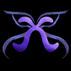 CS Marketplace Test 5004 xCollective 是一个专业成长社区，其使命是通过提供职业指导、网络和谈判技巧来打开 ~ 虚拟 ~ 大门并帮助人们在 web3 中获得有薪工作。我们专注于赋权女性和非二元个体
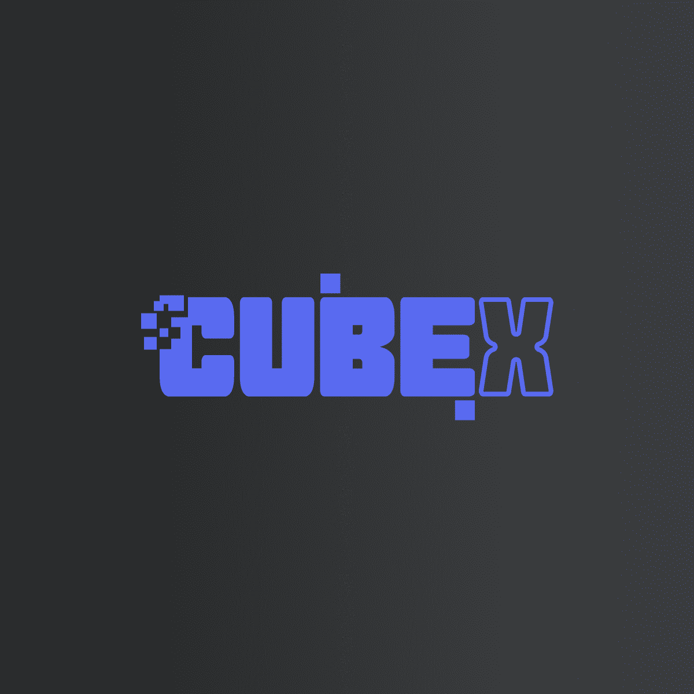 CubeX Card 欢迎来到立方 CubeX 是 ChainTech Labs 拥有的 3D 动画 NFT 集合。我们的 Cubies 在我们的视频游戏和应用程序中兼作您的个人化身和可玩角色。 我们有两个视频游戏和第一个目前处于测
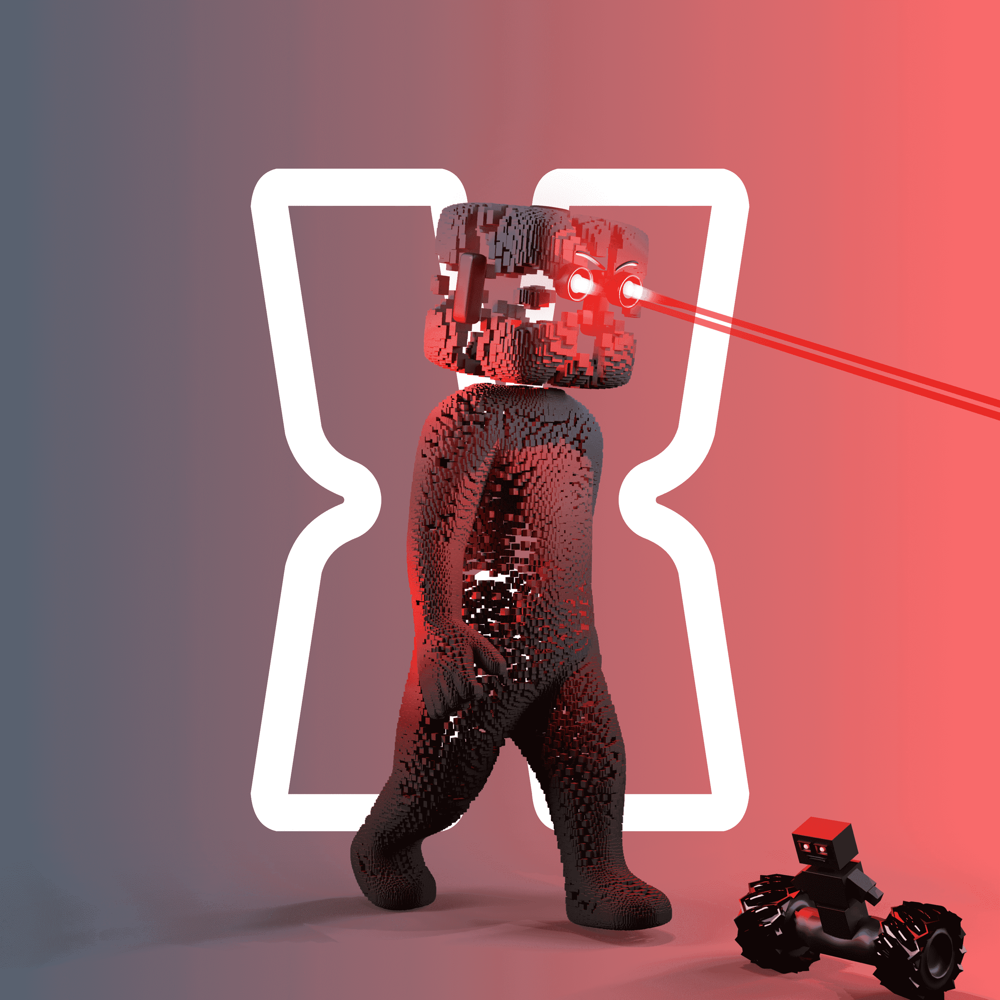 CubeX Official NFTs 经过 CUBE-X-官方 10,000 个立方体走向元宇宙。一个 NFT 项目，一个完全开发的射击游戏在 beta 中捕获旗帜视频游戏，一个完整的 NFT 社交媒体应用程序，包含许多
Cuddle Bears Daycare 欢迎来到日托！Cuddle Bears Daycare 是一个社区驱动的集合，由手绘特征随机生成的以太坊区块链上的 4,888 个个人资料图片 NFT 组成。我们的目标是成为虚拟世界中最
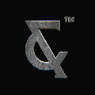 CULT&RAIN - The Genesis Collection 欢迎来到第一家豪华 WEB3 时装屋 CULT & RAIN 是一个颠覆性的数字时尚品牌，将创新的 NFT 艺术与独家高端实物兑换品相结合。 我们相信文化 我们的创始人是一位成功的时
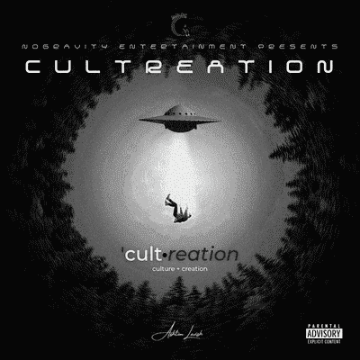 Cultreation: Culture + Creation AshtonLavish Cultreation 的 Cultreation Music NFT EP 是 AshtonLavish 第一个完整的 EP 项目。这是嘻哈的氛围。该项目是关于他在斗争、人际关系、家庭和社会意识的斗争中的观点。‘文化：文化
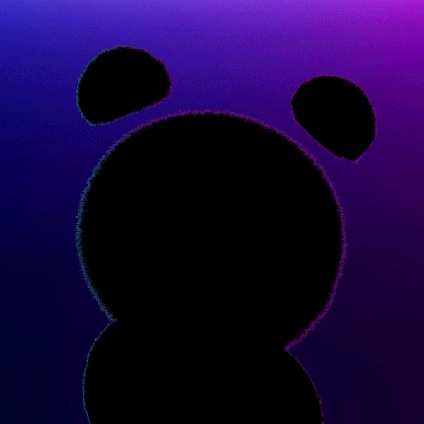 Culture Cubs Official 3,333 个公用事业会员 PFP。创新者、建设者和投资者的专属社区，推动 web 3 向前发展。每个 NFT 都允许访问我们的独家社区、风险实验室孵化器、会员应用程序、
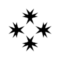 CuneiformNFTS 楔形文字呈现：Carlson Young Genesis 系列Cuneiform 是一个用于流式传输和创建者 NFT 的 Web 3.0 内容分发平台。通过授权创作者在保留控制权的同时展示他
Cunning Wolf Society CWS 欢迎来到 狡狼社 该协会是 5005 个 NFT ERC-721 Wolf 身份的家园，他们生活在 Metaverse 中，他们的意识托管在以太坊区块链上。每个身份都是独一无二的，并且由超过 130 种可能的特征
Cupcat Kittens Cupcat Kittens 是 Cupcats 制作的第二季系列。该系列包括可爱的小猫，它们是 Cupcats 生态系统的一部分。 6个月的艺术创作 与 45 位艺术家合作 1/1s 从 FND 获得的 18 个背景 我们的造币厂进
Curio.Cards Curio Cards是一个在线艺术展，是以太坊上的 First Art NFT，于 2017 年 5 月 9 日推出。Curio Cards 拥有来自七位不同艺术家的 30 个独特系列的卡片，在原始 ERC-721 非
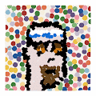 CurrencyPunks Punksverse 的骄傲成员 ArtCodeNFT 开发和维护 CryptoPunks 的衍生 NFT 集合。我们相信 CryptoPunks 是一个革命性的项目，是其自身宇宙的中心。我们通过创建和开发独特的艺术衍生系列来为 Punksverse 做出贡献
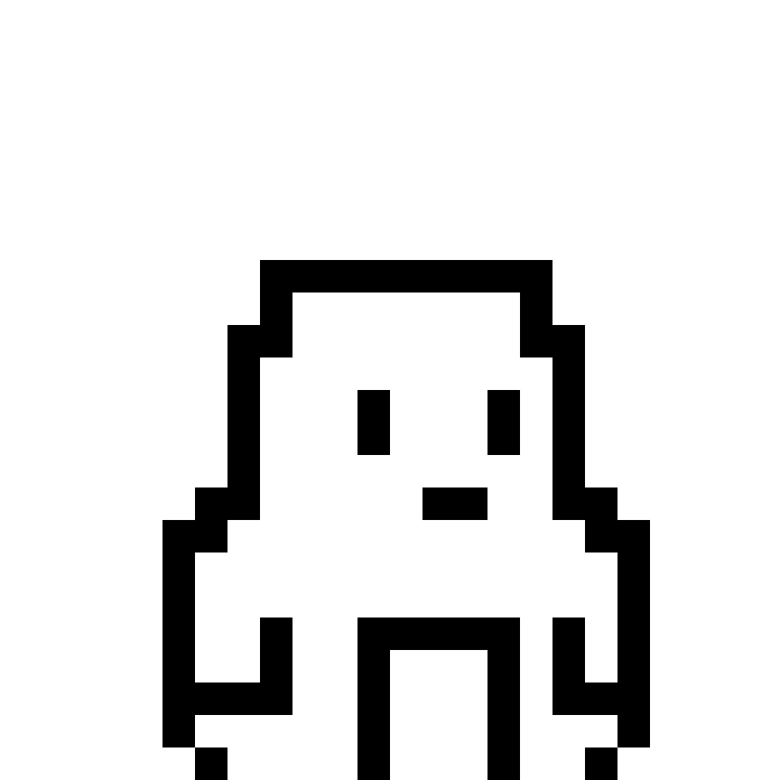 Cute Little Penguins 推出一个系列是免费的！我们只收取初始铸币费的 2.5%。与区块链 (*) 交互还需要支付本地费用( *)。 Solana 推出收藏：~0.013 SOL 铸造 NFT：铸币价格
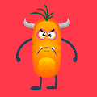 Cute Monsters World 可爱的怪物世界统计 创建于 10 个月前 10,000 代币供应 0% 费用 在过去的 7 天内没有出售可爱的怪物世界。 欢迎来到可爱的怪物世界！ 今天收养一个可爱的怪物！ Cute Monsters 是
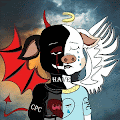 Cute Pig Club 欢迎大家加入可爱猪俱乐部，NFT + DEFI 可爱的猪俱乐部是 10,000 个猪 NFT 的集合——生活在以太坊区块链上的独特数字收藏品。CPC 不仅是 NFT，也是 NFT + DE
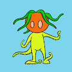 Cute Tentacles 可爱的触手统计 创建于 8 个月前 312代币供应 10% 费用 过去 7 天没有售出可爱触手。 10k 可爱的触手.. 这有多有趣？！每个可爱的触手都有自己独特的品质，构
Cyber Bandits by Michael Reeder Cyber Bandits 是艺术家[Michael Reeder]的一个项目。该项目的主要重点是将 Reeder 的物理绘画风格与生成的 pfp 虚拟世界联系起来。多年来，里德的绘画利用
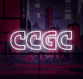 Cyber City Girls Club Cyber City Girls Club 统计数据 创建于大约 1 年前 5,555 代币供应 2.5% 费用 过去 7 天没有售出 Cyber City Girls Club。 Cyber City Girls Club 包含 5555 个独特的 Cyber Girl NFT Cyber City Girls Club NFT - 常见问题（FAQ） ▶
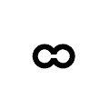 Cyber Curated 网络是一个与众不同的元宇宙。只需点击 5 次，任何人都可以在预先存在的目的地使用他们的 NFT 创建数字体验并进行分享。其中一些目的地的数量有限。 Cyber Curated 系
Cyber Gorillas Official CyberGorillas 是 3333 只随机生成的 Cyber 主题大猩猩的集合，其中包括 333 只创世纪 CyberGorillas。 重点关注功能支持的实用程序、合作伙伴关系和工具。优先考虑
Cyber Hornets Colony Club Cyber Hornets Colony Club (CHCC) 是一个收藏品品牌，拥有 8,888 件独特的 ERC-721 不可替代的代币艺术品 (NFT)，其所有权和真实性的公开证明存储在以太坊区块链上。Cyber Hornet 艺术
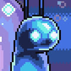 Cyber Keys NFT Cyber Snails项目由一群经验丰富的 NFT 交易者建立，旨在创建一个由经验丰富且相互联系的个人组成的高阿尔法社区。 该项目的使命是成为终极 NFT alpha 社区，并

 游戏玩法。")


，该项目构建了第一个封建投票系统")